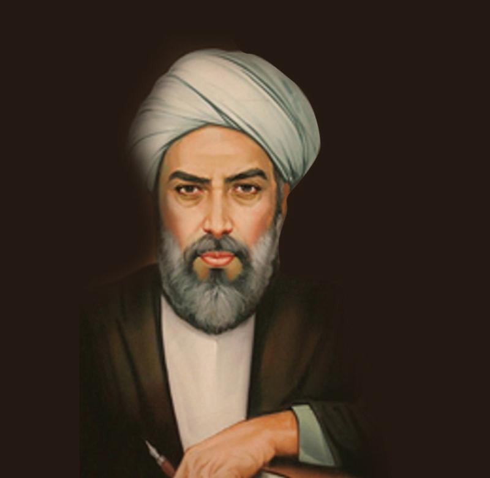

Who Was Mulla Sadra?
Mulla Sadra (Sadr al-Din Muhammad ibn Ibrahim Shirazi, c. 1571–1640) was one of the most influential philosophers of the later Islamic philosophical tradition. A Persian philosopher of the Safavid period, he developed a distinctive philosophical system commonly known as Transcendent Theosophy, or al-Hikmah al-Muta'aliyah.
Mulla Sadra developed his thought through a creative engagement with several major currents of Islamic intellectual life, including Avicennan philosophy, Illuminationist philosophy, Islamic theology, philosophical mysticism, and Shi'i intellectual traditions. Rather than simply combining these traditions, he sought to develop a new metaphysical framework in which the concept of existence occupied a central position.
His philosophy is particularly famous for the primacy of existence, the gradation of existence, substantial motion, and his theories of knowledge, the soul, and resurrection. His magnum opus, al-Hikmah al-Muta'aliyah fi al-Asfar al-'Aqliyyah al-Arba'ah, commonly known as Asfar al-Arba'a or The Four Journeys, presents these ideas within a vast philosophical, theological, and spiritual framework.
Mulla Sadra's importance lies partly in his attempt to rethink some of the most fundamental questions of metaphysics: What does it mean to exist? How are different beings related to one another? How does the soul develop? And how can philosophical reasoning be related to revelation and spiritual experience? His answers helped shape the subsequent development of philosophy in Iran and the wider Islamic world.
Mulla Sadra: Quick Facts
- Full name — Sadr al-Din Muhammad ibn Ibrahim Shirazi
- Known as — Mulla Sadra or Sadr al-Muta'allihin
- Born — c. 1571–1572 CE
- Died — 17th century, traditionally dated around 1640 CE
- Associated with — Shiraz, Qazvin, Isfahan, and Kahak
- Period — Safavid Iran
- Philosophical tradition — Islamic and Persian philosophy
- Major school — School of Isfahan
- Philosophical system — Transcendent Theosophy (al-Hikmah al-Muta'aliyah)
- Central concept — Primacy of existence
- Major doctrine — Substantial motion
- Major work — Asfar al-Arba'a
Mulla Sadra's Early Life and Historical Background

Mulla Sadra, whose full name was Sadr al-Din Muhammad ibn Ibrahim Shirazi, was born in Shiraz around 1571–1572 into a prominent family during the Safavid period. Seeking advanced intellectual training, he later moved first to Qazvin and then to Isfahan, the successive capitals of the Safavid Empire and major centers of philosophical and religious learning.
In these intellectual centers, Mulla Sadra studied philosophy, theology, Hadith, Qur'anic interpretation, and other branches of Islamic learning. His two most important teachers were Mir Damad, a major philosopher of the period, and Shaykh Baha'i, an influential scholar whose interests extended across religious and intellectual disciplines.
The world in which Mulla Sadra developed was shaped by the continuing interaction of Avicennan philosophy, Illuminationism, Islamic theology, mystical thought, and Shi'i scholarship. Rather than remaining within a single intellectual tradition, he eventually developed a philosophical synthesis that drew critically upon several of these currents.
Mulla Sadra's Education and Philosophical Influences
Mulla Sadra's philosophical education brought him into contact with several major traditions of Islamic intellectual history. He engaged deeply with the philosophy of Avicenna (Ibn Sina), the Illuminationist thought of Suhrawardi, Islamic theology, Qur'anic interpretation, and forms of mystical metaphysics associated with thinkers such as Ibn Arabi.
His education was not simply an accumulation of different doctrines. Mulla Sadra examined the agreements and tensions between philosophical reasoning, mystical knowledge, and religious teaching. Avicennan logical and metaphysical methods remained fundamental to his work, but he also gave an important place to intellectual intuition and spiritual transformation.
This attempt to bring different forms of knowledge into a coherent philosophical framework became one of the defining characteristics of Mulla Sadra's philosophy. His mature synthesis came to be known as Transcendent Theosophy, or al-Hikmah al-Muta'aliyah.
Mulla Sadra and the School of Isfahan
Mulla Sadra is closely associated with what modern scholars commonly call the School of Isfahan, an important intellectual movement connected with Safavid Iran. Isfahan became a major center of philosophical, theological, legal, mystical, and scientific learning, particularly during the period in which the city served as the Safavid capital.
Thinkers associated with this intellectual environment explored the relationship between rational philosophy, religious knowledge, and mystical insight. Important figures included Mir Damad and Shaykh Baha'i, both of whom played significant roles in Mulla Sadra's intellectual development.
Mulla Sadra eventually developed a philosophical position distinct enough to become a major tradition in its own right. His influence later extended throughout the eastern Islamic world, particularly in Iran, where the study and commentary of his major works became central to later traditions of Islamic philosophy.
What Was Mulla Sadra's Philosophy?
Mulla Sadra's philosophy is a comprehensive philosophical system centered on the nature of existence, the structure of reality, knowledge, and the transformation of the human soul. His mature approach became known as Transcendent Theosophy, or al-Hikmah al-Muta'aliyah.
His philosophy attempts to bring together rational demonstration, metaphysical inquiry, intellectual intuition, and religious revelation. Mulla Sadra did not regard these as necessarily competing paths to truth. Instead, he argued that a complete philosophical understanding of reality required both rigorous reasoning and the transformation of the person seeking wisdom.
Philosophy was therefore more than abstract speculation for Mulla Sadra. The pursuit of knowledge was connected with the perfection of the human soul and with a way of life directed toward a deeper understanding of reality.
What Is Mulla Sadra's Transcendent Theosophy?
Transcendent Theosophy, known as al-Hikmah al-Muta'aliyah, is the name most closely associated with Mulla Sadra's mature philosophical system. The expression refers broadly to a higher or transcendent form of wisdom rather than simply to a separate religious doctrine.
Mulla Sadra's system combines philosophical demonstration, metaphysical inquiry, mystical insight, theology, and the interpretation of religious texts. His aim was not merely to construct an abstract theory of reality, but also to understand how the human being can move toward intellectual and spiritual perfection.
Transcendent Theosophy draws critically upon earlier traditions, including Avicennan philosophy, Illuminationism, mystical metaphysics, and Shi'i intellectual thought. At the same time, Mulla Sadra developed distinctive doctrines concerning existence, motion, knowledge, the soul, and the relationship between God and creation.
Mulla Sadra's Philosophy of Existence
Existence is the central concept of Mulla Sadra's metaphysics. One of his most important philosophical innovations was to give ontological priority to existence rather than treating fixed essences or quiddities as the ultimate constituents of external reality.
For Mulla Sadra, existence is not merely an abstract concept produced by the human mind. It is the fundamental reality through which things are actual. Individual beings differ from one another, but they possess reality through different modes and degrees of existence.
This emphasis transformed the traditional philosophical discussion of being and essence. It allowed Mulla Sadra to develop a metaphysics in which reality is unified yet differentiated, graded yet diverse, and fundamentally dynamic rather than completely static.
Mulla Sadra on Existence and Essence
One of the central questions of Islamic metaphysics concerns the relationship between existence and essence. Essence, often translated from the Arabic concept of quiddity, concerns what a thing is, while existence concerns the actuality through which the thing is real.
Mulla Sadra argued that existence has ontological priority over essence. Essences are important for thought because they allow the mind to distinguish and classify things, but he held that existence is more fundamental to the reality of things outside the mind.
This position became the foundation of his distinctive ontology. Reality is not ultimately explained as a collection of completely self-contained and immutable essences; instead, Mulla Sadra understood existence itself as primary, differentiated, and capable of degrees of intensity and perfection.
What Is the Primacy of Existence in Mulla Sadra's Philosophy?
The primacy of existence, known as asalat al-wujud, is one of the central doctrines of Mulla Sadra's metaphysics. It expresses his claim that existence is ontologically fundamental.
According to this doctrine, essences or quiddities do not possess the same primary status in external reality as existence itself. The human mind can distinguish a horse from a tree, or one kind of being from another, through their essences, but such conceptual distinctions do not make essence the ultimate ground of reality.
Mulla Sadra therefore redirected the traditional debate about existence and essence toward an ontology centered on existence itself. This doctrine became one of the foundations of his later theories of gradation, causation, motion, and the relationship between God and created beings.
What Is the Gradation of Existence?
Another important doctrine in Mulla Sadra's philosophy is the gradation of existence, known as tashkik al-wujud. This doctrine explains how existence can be fundamentally one while appearing in many different beings.
Mulla Sadra understood existence as a reality expressed in different degrees of intensity, perfection, and limitation. Beings are therefore genuinely different from one another, but their differences do not require existence itself to be divided into completely unrelated realities.
The doctrine of gradation allowed him to explain both unity and multiplicity. Reality contains many levels and forms of being, yet these differences can be understood within a single metaphysical framework centered on the varying degrees of existence.
What Is Mulla Sadra's Theory of Substantial Motion?
Substantial motion, or al-harakat al-jawhariyyah, is one of Mulla Sadra's most important philosophical doctrines. It challenges the idea that change occurs only in the accidental properties of things while their underlying substances remain entirely unchanged.
Mulla Sadra argued that natural substances themselves are involved in continuous transformation. Change therefore reaches more deeply into reality than a mere alteration of size, position, color, or other accidental characteristics. The natural world is fundamentally dynamic.
Substantial motion became important for his accounts of time, nature, causation, and the development of living beings. It also supported his broader metaphysical vision in which existence is not a static reality but is associated with movement, transformation, and degrees of perfection.
Mulla Sadra's Philosophy of the Soul
The human soul occupies an important place in Mulla Sadra's philosophy. His philosophical psychology is closely connected with his metaphysics of existence, his doctrine of substantial motion, and his understanding of knowledge and human perfection.
Mulla Sadra understood the soul as developing through stages of being. Human existence begins in close connection with the material world, but the soul possesses the capacity for increasingly higher forms of perception, intellectual activity, and spiritual realization.
The transformation of the soul is therefore not merely a psychological process in the modern sense. It is an ontological development connected with the soul's movement toward greater perfection, and it provides an important foundation for his discussions of knowledge, immortality, the imagination, and resurrection.
Mulla Sadra's Theory of Knowledge
Epistemology in Mulla Sadra's philosophy is closely connected with metaphysics and philosophical psychology. Knowledge is not understood merely as the passive reception of information by a separate mind, but as something related to the development and perfection of the knowing soul.
Mulla Sadra gave an essential place to rational demonstration and philosophical argument. At the same time, he argued that human knowledge cannot always be reduced to conceptual representations or discursive reasoning, and he developed accounts of more immediate forms of awareness.
His theory of knowledge therefore attempts to overcome a simple opposition between rational philosophy and mystical experience. The search for truth requires intellectual discipline, but the capacity to know is also connected with the ontological and spiritual development of the person who knows.
What Is Knowledge by Presence in Mulla Sadra's Philosophy?
Knowledge by presence, commonly called al-'ilm al-huduri, is an important part of the broader epistemological tradition developed in Islamic philosophy and given a significant place in Mulla Sadra's thought.
Knowledge by presence differs from knowledge that depends upon mental concepts or representations. In such knowledge, the knower has an immediate awareness of what is known rather than knowing it solely through an image, definition, or abstract concept.
This idea is particularly important for understanding self-awareness and the nature of the soul. Mulla Sadra used it within a wider metaphysical account in which knowledge is closely related to being, allowing questions about cognition to be connected with the mode of existence of the knowing subject.
Mulla Sadra's Philosophy of God
Mulla Sadra's philosophy of God is grounded in his metaphysics of existence. God is understood as the Necessary Existent, whose existence does not depend upon another cause and whose reality is fundamentally unlike the contingent existence of created beings.
Contingent beings, by contrast, do not possess existence independently. Their reality is dependent and ultimately grounded in the divine source of existence. Questions about causation and ontological dependence are therefore central to Mulla Sadra's philosophical understanding of the relationship between God and the world.
His philosophical theology develops earlier Islamic metaphysical arguments while also engaging mystical and theological traditions. The result is an account of divine reality closely connected with his doctrines of the primacy, unity, and gradation of existence.
Mulla Sadra and the Philosophy of Creation
Mulla Sadra's account of creation is closely connected with his doctrine of existence and his analysis of contingency. Created beings do not possess absolute independence; their existence depends upon the ultimate source from which contingent reality derives.
This dependence can be understood as more than a question about a single event at the beginning of time. Mulla Sadra's metaphysical framework emphasizes the continuing ontological dependence of created beings upon God, whose existence is necessary rather than contingent.
His discussions of creation also engage wider philosophical debates about temporal origination, causation, and the relationship between the eternal divine reality and a changing world. These questions form part of his larger attempt to explain how dependent and dynamic beings are related to their ultimate source.
Mulla Sadra's Cosmology and Philosophy of Nature
Mulla Sadra's cosmology extends his metaphysics of existence into the study of the natural world. The universe is not understood as a collection of completely self-sufficient substances, but as an ordered reality whose beings possess different degrees and modes of existence.
His philosophy of nature is closely connected with the doctrine of substantial motion. Natural things are not simply static substances that occasionally acquire new properties; the physical world itself is characterized by continuous transformation at the level of substance.
Mulla Sadra therefore connected existence, motion, time, causation, and development within a single philosophical framework. The changing natural world could be understood as a dynamic order of beings moving through different stages and degrees of actuality and perfection.
Mulla Sadra on the Soul, Afterlife, and Resurrection
Resurrection is an important subject in Mulla Sadra's philosophical theology. His account of the afterlife is closely connected with his understanding of the soul as a reality capable of development, transformation, and forms of existence beyond bodily life.
Mulla Sadra connected the soul's future condition with its ontological and intellectual development. The soul's life is therefore not treated as a series of completely disconnected states, but as a continuing development whose consequences extend beyond its present bodily existence.
His philosophical discussions of resurrection also involve the role of imagination and the nature of posthumous existence. In this way, he attempted to engage religious teachings about the afterlife through a philosophical framework concerned with existence, the soul, and human transformation.
What Is the Asfar al-Arba'a or Four Journeys?
The Asfar al-Arba'a, usually translated as The Four Journeys, is Mulla Sadra's magnum opus and the most comprehensive presentation of his mature philosophical system.
Its full title is al-Hikmah al-Muta'aliyah fi al-Asfar al-'Aqliyyah al-Arba'ah, meaning roughly Transcendent Wisdom in the Four Intellectual Journeys. The work organizes major philosophical questions through the metaphor of a series of intellectual and spiritual journeys.
The four journeys are traditionally described as a journey from creation toward God, a journey in relation to God, a return from God toward creation, and a journey within creation while remaining oriented toward God. Across this vast work, Mulla Sadra discusses metaphysics, theology, natural philosophy, psychology, epistemology, and eschatology.
Major Works of Mulla Sadra
Mulla Sadra was a prolific author whose writings cover philosophy, theology, metaphysics, Qur'anic interpretation, mysticism, and questions concerning the soul and knowledge. His most important works include:
- Asfar al-Arba'a — The Four Journeys and his most comprehensive philosophical work.
- Al-Hikma al-'Arshiyya — A major work of philosophical theology and metaphysics.
- Al-Masha'ir — A concise treatment of Mulla Sadra's philosophy of existence.
- Al-Shawahid al-Rububiyyah — A work concerning philosophical theology and divine wisdom.
- Mafatih al-Ghayb — A work associated with Mulla Sadra's Qur'anic and philosophical interpretation.
- Asrar al-Ayat — A philosophical and mystical interpretation of Qur'anic verses.
The Asfar al-Arba'a remains the central text for understanding the overall structure of Mulla Sadra's philosophical system. His other works often examine particular problems in greater concentration, including existence, divine reality, Qur'anic interpretation, knowledge, creation, and resurrection.
Mulla Sadra's Main Philosophical Ideas
1. Primacy of Existence
Mulla Sadra argues that existence is ontologically fundamental. Essences or quiddities are important for conceptual thought, but existence has priority in explaining what is ultimately real.
2. Gradation of Existence
Existence is expressed through different degrees of intensity, perfection, and limitation. This doctrine allows Mulla Sadra to explain how reality can be both unified and genuinely diverse.
3. Substantial Motion
Reality is fundamentally dynamic. Natural substances themselves undergo continuous transformation rather than changing only in their accidental properties.
4. Knowledge by Presence
Some forms of knowledge involve immediate awareness rather than merely possessing conceptual representations. This idea is especially important for understanding self-awareness, the soul, and the relationship between knowledge and being.
5. Philosophy as Spiritual Perfection
Philosophy is not only theoretical speculation. For Mulla Sadra, the pursuit of wisdom also involves the transformation and perfection of the human soul, bringing intellectual inquiry into relation with spiritual practice.
Mulla Sadra, Philosophy, Mysticism, and Revelation
One of the most distinctive characteristics of Mulla Sadra's philosophy is his attempt to reconcile philosophical reasoning, mystical insight, and religious revelation.
He did not believe that rational philosophy and spiritual experience had to remain completely separate. Logical demonstration remained essential for philosophical inquiry, while intellectual intuition and spiritual discipline could contribute to a deeper understanding of reality.
This synthesis helped distinguish Transcendent Theosophy from a purely Peripatetic approach based principally on discursive reasoning, while also resisting the idea that mystical intuition alone could replace philosophical demonstration.
Mulla Sadra and Ibn Arabi: What Is the Connection?
Mulla Sadra and Ibn Arabi belong to different periods of Islamic intellectual history, but the metaphysical and mystical traditions associated with Ibn Arabi formed an important part of the intellectual background from which Mulla Sadra developed his mature philosophical synthesis.
Mulla Sadra engaged with themes associated with the unity and manifestation of being, but he developed his own systematic account of existence. His doctrines of the primacy and gradation of existence should therefore not simply be treated as repetitions of Ibn Arabi's mystical language.
The relationship is better understood as one of philosophical engagement and creative synthesis. Mulla Sadra incorporated elements from mystical metaphysics into a wider system that also drew heavily upon Avicennan philosophy, Illuminationism, theology, and rigorous philosophical argument.
Mulla Sadra and Avicenna: Development of Islamic Metaphysics
Avicenna (Ibn Sina) was one of the most important philosophical predecessors of Mulla Sadra. Avicenna's metaphysical analysis of existence, essence, necessity, and contingency provided an essential intellectual background for many of the questions that Mulla Sadra would later reconsider.
Mulla Sadra did not simply accept Avicennan metaphysics unchanged. He transformed the discussion by giving ontological priority to existence and by developing a more explicitly dynamic account of natural and substantial reality.
In this sense, Mulla Sadra represents a major later development within Islamic philosophy. Avicennan concepts were reinterpreted alongside Illuminationist, mystical, theological, and Shi'i intellectual traditions to produce a new and influential philosophical synthesis.
Mulla Sadra's Influence and Legacy in Islamic Philosophy
Mulla Sadra became one of the most influential philosophers of the eastern Islamic world. Although the full extent of his influence developed gradually, his philosophical system later became especially important in Iran and within traditions of Shi'i philosophical education.
His influence also extended to South Asia, where works associated with his philosophical tradition entered later educational and commentary traditions. The transmission of his thought occurred through teaching, manuscript culture, philosophical commentaries, and the continuing study of his major works.
In modern Iran, Mulla Sadra remains a major subject of study and debate. His ideas concerning existence, metaphysics, the soul, knowledge, motion, and the relationship between philosophy and spirituality continue to shape discussions of Persian and Islamic philosophy.
Mulla Sadra's Philosophy Explained Simply
Mulla Sadra can be understood as a philosopher who placed existence at the center of reality and attempted to bring philosophical reasoning, mystical insight, and Islamic religious thought into a single, wide-ranging philosophical system.
- What is most fundamental in reality? Existence is more fundamental than the essences or categories through which the human mind distinguishes and describes things.
- Is reality static? No. Mulla Sadra's theory of substantial motion describes the natural world as undergoing continuous transformation at a fundamental level.
- Are all beings equal in existence? No. Existence is a unified reality expressed through different degrees of intensity, perfection, and limitation.
- How do humans know reality? Human knowledge involves rational thought and conceptual understanding, but Mulla Sadra also recognized direct forms of awareness such as knowledge by presence.
- What is the purpose of philosophy? Philosophy is a search for wisdom that also contributes to the intellectual and spiritual perfection of the human soul.
Why Is Mulla Sadra Important in the History of Philosophy?
Mulla Sadra is important because he transformed major questions in Islamic metaphysics. His doctrine of the primacy of existence gave ontological priority to being itself and developed a highly influential account of the relationship between existence and essence.
His doctrine of substantial motion also challenged more static accounts of natural substance by presenting change as something that reaches into the substantial reality of the natural world. His theories of knowledge and the soul similarly connected metaphysical questions with human intellectual and spiritual development.
His broader achievement was to create an ambitious synthesis of philosophical reasoning, Islamic theology, mystical insight, and scriptural interpretation. For this reason, Mulla Sadra is widely regarded as one of the central figures in the later history of Persian and Islamic philosophy.
Frequently Asked Questions About Mulla Sadra
Who was Mulla Sadra?
Mulla Sadra was a Persian Islamic philosopher of the Safavid period who developed the philosophical system known as Transcendent Theosophy. He is particularly famous for his metaphysics of existence, substantial motion, and theory of knowledge.
What is Mulla Sadra famous for?
Mulla Sadra is famous for Transcendent Theosophy, the primacy of existence, gradation of existence, substantial motion, knowledge by presence, and his major philosophical work Asfar al-Arba'a.
What was Mulla Sadra's philosophy?
Mulla Sadra's philosophy was a synthesis of Islamic theology, Avicennan philosophy, Illuminationism, mystical thought, and philosophical reasoning centered on the nature of existence.
What is Transcendent Theosophy?
Transcendent Theosophy, or al-Hikmah al-Muta'aliyah, is the philosophical system associated with Mulla Sadra. It combines rational demonstration, metaphysics, spiritual insight, and Islamic religious thought.
What is the primacy of existence?
The primacy of existence, or asalat al-wujud, is Mulla Sadra's doctrine that existence is ontologically fundamental, while essence or quiddity does not have the same foundational status in external reality.
What is substantial motion according to Mulla Sadra?
Substantial motion is the doctrine that natural substances themselves undergo continuous transformation. Change is therefore not limited to accidental properties but reaches the substantial level of natural reality.
What is the gradation of existence?
The gradation of existence, or tashkik al-wujud, is the idea that existence is a unified reality expressed through different degrees of intensity and perfection.
What did Mulla Sadra believe about existence and essence?
Mulla Sadra argued that existence has ontological priority over essence. Essences help the mind identify and classify things, while existence is fundamental to external reality.
What is knowledge by presence?
Knowledge by presence, or al-'ilm al-huduri, refers to a direct form of knowledge in which the known is present to the knower rather than being known only through an abstract mental representation.
What did Mulla Sadra believe about the soul?
Mulla Sadra viewed the soul as a developing reality capable of intellectual and spiritual perfection. His philosophy of the soul is closely connected with existence, knowledge, substantial motion, and resurrection.
What did Mulla Sadra believe about God?
Mulla Sadra understood God as the Necessary Existent and ultimate source of existence. His philosophical theology is closely connected with his metaphysics of being and causation.
What is the Asfar al-Arba'a?
Asfar al-Arba'a, or The Four Journeys, is Mulla Sadra's magnum opus. It presents his philosophical system through the metaphor of four intellectual and spiritual journeys and discusses metaphysics, theology, psychology, cosmology, epistemology, and eschatology.
Who influenced Mulla Sadra?
Mulla Sadra was influenced by Avicenna, Suhrawardi, Ibn Arabi, Islamic theology, Shi'i intellectual traditions, and earlier philosophical traditions. He developed these influences into his own system of Transcendent Theosophy.
What is Mulla Sadra's contribution to Islamic philosophy?
Mulla Sadra transformed Islamic metaphysics by placing existence at the center of philosophical inquiry and developing influential doctrines concerning existence and essence, substantial motion, knowledge, the soul, and the relationship between philosophy and spiritual wisdom.
Why is Mulla Sadra important today?
Mulla Sadra remains important because his philosophy continues to be studied in Islamic philosophy, Persian philosophy, metaphysics, philosophy of religion, and discussions concerning existence, consciousness, knowledge, and the nature of reality.
Related Islamic and Persian Philosophers
Explore other major thinkers in the development of Islamic philosophy, Persian philosophy, mystical thought, and medieval and early modern intellectual history.
Related Areas of Philosophy
Mulla Sadra's philosophy connects Islamic metaphysics with epistemology, philosophy of mind, philosophy of religion, cosmology, mysticism, and the philosophy of existence.
Why Mulla Sadra Still Matters
Mulla Sadra occupies a central position in the later history of Islamic philosophy. His Transcendent Theosophy transformed philosophical discussions of existence, essence, causation, knowledge, the soul, and the nature of reality.
His doctrines of the primacy of existence, gradation of existence, and substantial motion provide a dynamic account of reality, while his theory of knowledge by presence connects metaphysics with consciousness and the human soul.
Mulla Sadra's broader achievement was his attempt to bring together reason, philosophical demonstration, mystical insight, theology, and revelation. His influence on later Islamic philosophy makes him an essential thinker for anyone studying Persian philosophy, Islamic metaphysics, and the history of philosophy.
Explore Great Philosophers